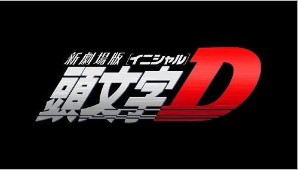

秋名山可谓是“九曲十八弯”，五连发夹弯这一环节成为了秋名山比赛的看点，当然，五连发夹弯的甩尾风险比一般的急弯要多，因为赛车经过五连发夹弯的时候，必定是一次急弯，一次直道，要不断的加速和减速，而且，漂移的幅度要大得多，所以这也正是藤原拓海跑发夹弯必须使用沟渠跑法的原因，将一边的轮胎放入路边的沟渠进行漂移，可以保证车子不会因甩尾而抛出山路，况且五连发夹弯的坡度较大，在那里漂移的话会有一定的危险，所以没有经过专业训练的话请不要去漂移，山路是很危险的，而且，如果你的车轮不是优质车轮的话或是用久了的话，就算了，因为漂移对车轮磨损很大的。
